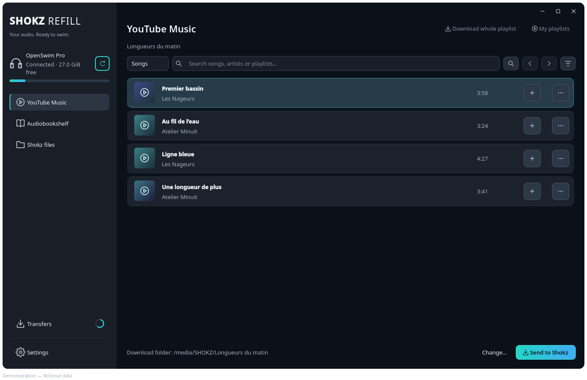
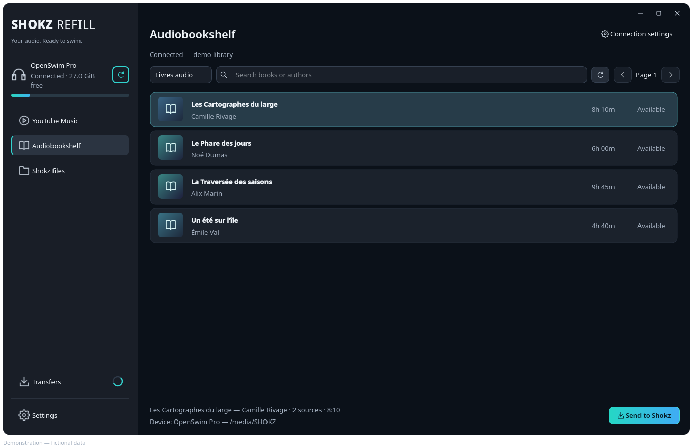
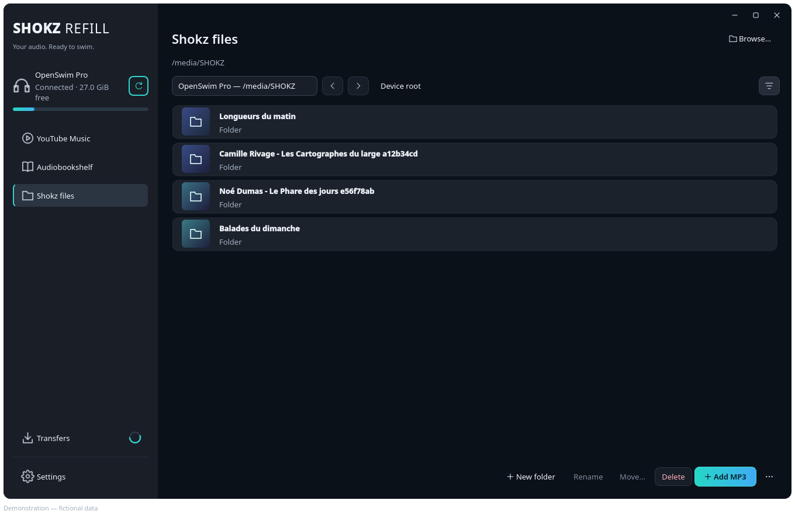
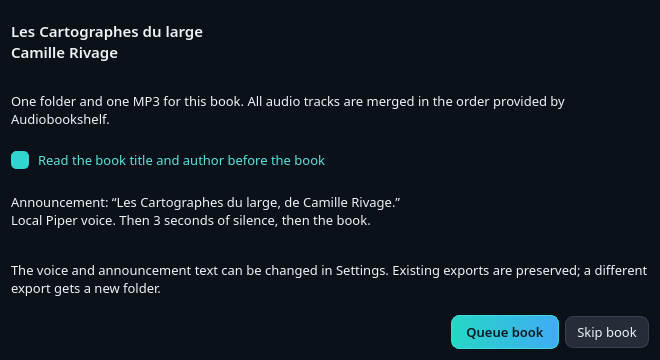
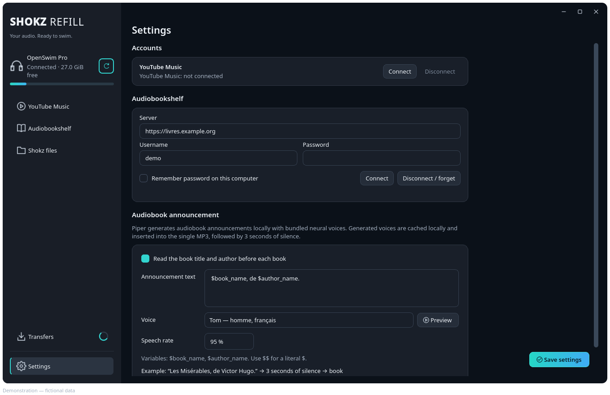

Deine Titel, deine Playlists.
Suche auf YouTube Music. Wähle einzelne Titel oder eine ganze Playlist und verfolge die Vorbereitung in einer gemeinsamen Warteschlange.
Zur MusikanleitungDein Audiobegleiter, vor dem nächsten Training
Etwas Musik. Ein Buch zum Fertighören.
Mach deine Shokz bereit und lass den Bildschirm im Spind.
Desktop-App · Linux & Windows · Open Source

MP3192 kbit/s · 44,1 kHz · Stereo
In deinem TempoFortschritt, Abbruch und Fortsetzen
Auf deinem RechnerEine native App, ohne eigenen Server
01 / Ein Zuhause für dein Audio
Wähle deine Begleitung. Die App erstellt MP3-Dateien und überträgt sie auf das ausgewählte Shokz-Laufwerk.
Suche auf YouTube Music. Wähle einzelne Titel oder eine ganze Playlist und verfolge die Vorbereitung in einer gemeinsamen Warteschlange.
Zur MusikanleitungDurchsuche deinen Audiobookshelf-Server und wähle deine Bücher. Die Audiodateien werden in der vom Server vorgegebenen Reihenfolge zusammengefügt.
AudiobookshelfPrüfe den freien Speicher, erstelle Ordner und importiere lokale MP3-Dateien. Bei Namenskonflikten bleiben beide Dateien unter verschiedenen Namen erhalten.
Zur Geräteanleitung02 / Für Geschichten auf langen Strecken
Eine MP3 pro Buch verhindert, dass der Kopfhörer einzelne Dateien umsortiert. Der Inhalt folgt der Titelreihenfolge von Audiobookshelf, auch wenn die Dateinamen nicht alphabetisch sortiert sind.
Vor dem Buch kann eine lokale Männerstimme Titel und Autor ansagen. Standardgeschwindigkeit: 95 %. Dann folgen 3 Sekunden Stille und die Geschichte beginnt.
Piper und seine Stimmen sind enthalten. Die Sprachausgabe funktioniert offline.
Mein erstes Buch vorbereiten
03 / Erste Schritte
Die Schaltflächen der App sind auf Englisch. Diese Anleitung verwendet ihre genauen Namen, damit du sie leicht findest.
Schritt 1 / Der Ausgangspunkt
Warte, bis die Übertragungen abgeschlossen sind, und wirf das Gerät über das Betriebssystem aus, bevor du es abziehst.
Öffne den gewünschten Ordner in der Geräteansicht, klicke auf Add local MP3 und wähle deine Dateien. Die App kopiert sie ohne erneute Kodierung: Qualität und Metadaten bleiben unverändert. Mit New folder erstellst du einen Ordner und mit Move selected… ordnest du Dateien, die bereits auf dem Kopfhörer liegen.

Schritt 2 / Musik
Klicke auf Connect YouTube Music und folge dem Dialog, um die Header einer /browse-Anfrage aus deiner Sitzung auf music.youtube.com zu importieren. Nutze danach My playlists. Die öffentliche Suche funktioniert ohne Anmeldung.
Schritt 2 / Hörbücher
Dein Audiobookshelf-Konto benötigt die Downloadberechtigung. Das Passwort wird nur gespeichert, wenn du die entsprechende Option aktivierst.

Schritt 3 / Deine persönliche Note
$book_name und $author_name an. Die Vorschau zeigt das Ergebnis; $$ fügt ein Dollarzeichen ein.Beispieltext für die englische Stimme
You are listening to $book_name.
A book by $author_name.
04 / Jetzt bist du dran
Wähle die ausführbare Datei für dein Betriebssystem in den GitHub-Releases. Portable Versionen enthalten ihre Abhängigkeiten.
Lade Shokz-Refill-linux-x86_64 herunter, mache die Datei ausführbar und starte sie.
chmod +x Shokz-Refill-linux-x86_64
./Shokz-Refill-linux-x86_64Lade Shokz-Refill-windows-x86_64.exe herunter und starte die Datei.
Verfügbarkeit der Funktionen. Screenshots und Anleitung zeigen die aktuelle App. Die ältere Version 2026.41.1 erschien vor Audiobookshelf, dem Zusammenfügen von Büchern und Piper. Nutze für diese Funktionen eine neuere Version und beachte deren Versionshinweise.
Noch eine Frage?
Die App richtet sich an Shokz-Kopfhörer mit USB-MP3-Speicher, darunter OpenSwim Pro. Wird ein Laufwerksname nicht erkannt, wähle den Ordner manuell aus. Das Wiedergabeverhalten hängt von Modell und Firmware ab.
Bei Audiobookshelf-Exporten werden die Titel in der vom Server vorgegebenen Reihenfolge zusammengefügt. Der Kopfhörer kann Kapitel innerhalb dieser einen MP3 daher nicht umsortieren. Die App garantiert keine Wiedergabereihenfolge für getrennte Titel oder Bücher.
Erkannte identische Exporte werden übersprungen. Nicht identifizierte Dateien und Namenskonflikte bleiben erhalten. Eine neue Buchversion, etwa mit anderer Einleitung, erhält einen neuen nummerierten Ordner.
Verbinde dasselbe Gerät erneut und wähle es aus. Nutze Retry selected für einen Warteschlangeneintrag oder Resume interrupted copies für unterbrochene Kopiervorgänge. Die App prüft Teildateien vor dem Fortsetzen und die Integrität vor dem Fertigstellen.
Nein. Piper und die Stimmmodelle sind in den aktuellen portablen Versionen enthalten. Die Ansage wird lokal erzeugt. Für Mediendownloads ist Zugriff auf YouTube Music oder deinen Audiobookshelf-Server nötig.
Exporte, die die vorsichtige MP3-Grenze von 4 GiB pro Datei überschreiten würden, werden abgelehnt. Plane auch Platz auf deinem Rechner für Quell- und Zwischendateien ein.